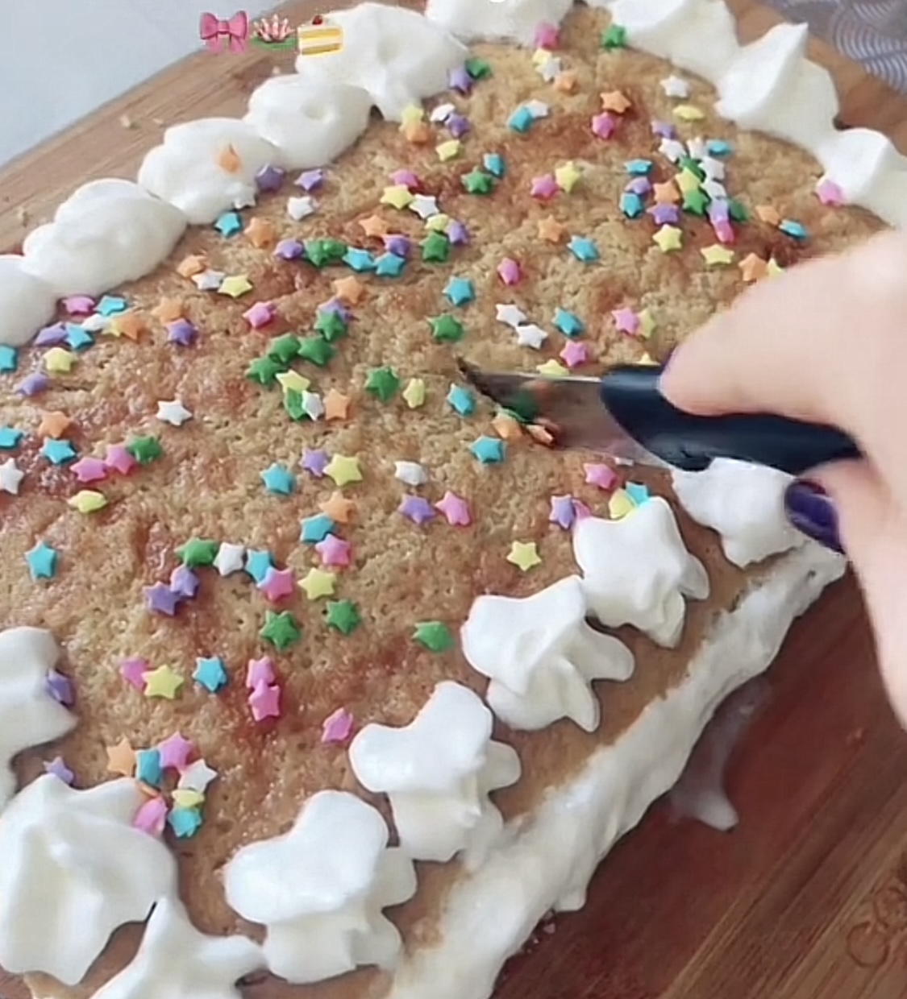

How to make a cake for your arch nemesis(no)
Jump to the tutorial
During my junior year, I was at my lowest. And as I was searching for a way to relax myself, I picked up on bakery. And during my first few attempts at baking, I would pick store mixes. And this one time, I wanted to be fancy, I bought sprinkles and whipped cream. I baked my cake, decorated it with whipped cream and the sprinkles. It was so good omg, now that's my signature cake that everyone be asking for. One disclaimer though, you may have to adjust the following ingredients down bellow becuase I don't do measurements. I do whatever my heart wants me to do (｡•̀ᴗ-)✧

Tips from the expert(me)
- Use Room Termperature Ingredients: Do NOT put any of them in the microwave, I'm so serious when I say this. Your egg, butter, and buttermilk. Everything would workout better if it's in the room temperature.
- Check for Doneness: Just 5 minutes before its due time, get it out and insert a toothpick into the center of one. If it comes out clean or with a few moist crumbs. Don't overbake, it's gonna be dry and flakey.
- Don't Overmix the Batter: If you like dense and tough muffins, well sure do it. However, if you don't, stir the wet and dry ingredients until it's just combined. It is OKAY if there are a few lumps.
Ingredients
| Category |
Ingredient |
Amount |
| Dry Ingredients |
Betty Crocker Chocolate Chip Cookie Mix |
1 bag |
|
White Sugar |
3 teaspoons |
|
Brown Sugar (if applicable) |
2 teaspoons |
| Wet Ingredients |
Unsalted butter (melted) |
1/2 cup |
|
Large egg |
2 |
|
Buttermilk (or milk as an alternative) |
1 cup |
|
Vanilla extract |
1 teaspoon |
| Other Ingredients |
Whipped Cream |
1 or 2 cans |
|
Optional: Sprinkles |
1 tablespoon |
Instructions
- Preheat the oven: Preheat to 350°F (190°C) and butter the cake mold(i think thats what you call it).
- Combine the wet ingredients: Whisk together the melted butter, egg, buttermilk (or milk), and vanilla extract.
- Combine wet and dry ingredients: Pour the cookie mix into the batter and stir until just combined. Don’t overmix; it’s okay if the batter is a little lumpy.
- Fill the mold: Pour the batter into the mold.
- Bake: Bake for 18-22 minutes, or until a toothpick inserted into the center comes out clean.
- Decorations: Cut the cake in the middle, put whipped cream in the middle and put the top "bun" of our cake on. Do whatever with the whipped cream on the top layer, and lastly sprinkle some sprinkles.
- Serve: Serve warm and enjoy!